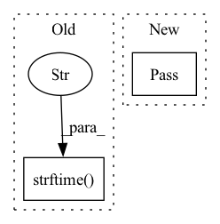

Pattern ID :39490
Before Change
class LossHistory():
def __init__(self, log_dir, model, input_shape):
time_str = datetime.datetime.strftime( datetime.datetime.now(),"%Y_%m_%d_%H_%M_%S" )
self.log_dir = os.path.join(log_dir, "loss_" + str(time_str))
self.losses = []
self.val_loss = []
After Change
dummy_input = torch.randn(2, 3, input_shape[0], input_shape[1])
self.writer.add_graph(model, dummy_input)
except:
pass
def append_loss(self, epoch, loss, val_loss):
if not os.path.exists(self.log_dir):
In pattern: SUPERPATTERN
Frequency: 3
Non-data size: 2
Instances Fragment ID: 112144124
Project Name: bubbliiiing/efficientdet-pytorch
Commit Name: 1fd4f8e549b84e99d93fa05c76adc955fa6223f5
Time: 2022-05-19
Author: 3323290568@qq.com
File Name: utils/callbacks.py
M Class Name: LossHistory
N Class Name: LossHistory
M Method Name: __init__(4)
N Method Name: __init__(4)
M Parent Class:
N Parent Class:
M File Name: utils/callbacks.py
N File Name: utils/callbacks.py
M Start Line: 14
M End Line: 15
N Start Line: 24
N End Line: 36
Before Change
train_loader = DataLoader(tsds_train, batch_size=800, shuffle=True, num_workers=10)
for data in train_loader:
now = time.localtime()
print(time.strftime("%Y-%m-%d-%H_%M_%S" , now) )
// The dimension of sample is same as tabular data, but it will return timeseries data of the sample
After Change
train_loader = DataLoader(tsds_train, batch_size=800, shuffle=True, num_workers=10)
t = time.time()
for data in train_loader:
pass
print(f"Passing all training batches with fill takes {time.time() - t}s")
// The dimension of sample is same as tabular data, but it will return timeseries data of the sample
Fragment ID: 112144123
Project Name: microsoft/qlib
Commit Name: d2107c99577793fa7de2f0d8211dd6fe8984c0ce
Time: 2020-12-09
Author: afe.young@gmail.com
File Name: tests/test_dataset.py
M Class Name: TestDataset
N Class Name: TestDataset
M Method Name: testTSDataset(1)
N Method Name: testTSDataset(1)
M Parent Class: TestAutoData
N Parent Class: TestAutoData
M File Name: tests/test_dataset.py
N File Name: tests/test_dataset.py
M Start Line: 65
M End Line: 75
N Start Line: 45
N End Line: 66
Before Change
class LossHistory():
def __init__(self, log_dir, model, input_shape):
time_str = datetime.datetime.strftime( datetime.datetime.now(),"%Y_%m_%d_%H_%M_%S" )
self.log_dir = os.path.join(log_dir, "loss_" + str(time_str))
self.losses = []
self.val_loss = []
After Change
dummy_input = torch.randn(2, 3, input_shape[0], input_shape[1])
self.writer.add_graph(model, dummy_input)
except:
pass
def append_loss(self, epoch, loss, val_loss):
if not os.path.exists(self.log_dir):
Fragment ID: 112144121
Project Name: bubbliiiing/retinanet-pytorch
Commit Name: b94f6cb7ab028c9454e82d1b82b8dd44d27256bc
Time: 2022-05-14
Author: 3323290568@qq.com
File Name: utils/callbacks.py
M Class Name: LossHistory
N Class Name: LossHistory
M Method Name: __init__(4)
N Method Name: __init__(4)
M Parent Class:
N Parent Class:
M File Name: utils/callbacks.py
N File Name: utils/callbacks.py
M Start Line: 14
M End Line: 15
N Start Line: 24
N End Line: 36